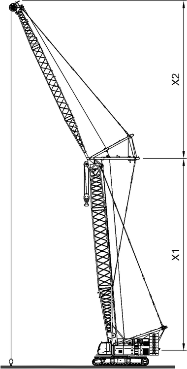

Seil der Winde1 und/oder Seil der Winde2 mit Vorspannung aufspulen
ACHTUNG
Einschneiden des Seils der Winde1 und/oder des Seils der Winde2 in darunterliegende Lagen!
Beschädigung der Winde1 und/oder der Winde2, Beschädigung des Seils.
Winde1 und/oder Winde2 mit ausreichender Vorspannung aufspulen. |
Durch Heben leichter Lasten in große Höhen mit hoher Anzahl der Einscherungen wird das Seil der Winde1 und/oder das Seil der Winde2 aufgrund geringer Vorspannung locker aufgespult. Wird anschließend eine schwere Last gehoben, kann sich das Seil der Winde1 und/oder das Seil der Winde2 in die darunterliegenden Lagen einschneiden.

Hinweis
Liebherr empfiehlt: | |
Verschleiß reduzieren: Beim Heben von Lasten hohe Anzahl der Einscherungen verwenden. | |

Hinweis
Liebherr empfiehlt: | |
Seil der Winde1 und/oder Seil der Winde2 während der Stillstandszeiten auf Baustelle mit Vorspannung aufspulen. | |

Fig. 5983: Erforderliche Anzahl der Einscherungen berechnen
Fig. 5983: Erforderliche Anzahl der Einscherungen berechnen
Formel für Berechnung der erforderlichen Anzahl der Einscherungen | |
|---|---|
n | Erforderliche Anzahl der Einscherungen |
S | Gesamt-Nutzlänge des Seils der Winde1 und/oder des Seils der Winde2 |
X1 | Länge des Hauptauslegers |
X2 | Länge des Nadelauslegers |
Formel für Berechnung der erforderlichen Anzahl der Einscherungen
Seil der Winde1 und/oder Seil der Winde2 mit kurzem Auslegersystem vorspannen
Erforderliche Anzahl der Einscherungen berechnen. |
Für die Berechnung der erforderlichen Last werden 10 % des maximalen Seilzugs der Winde1 und/oder der Winde2 mit der erforderlichen Anzahl der Einscherungen multipliziert.
Erforderliche Last berechnen. |
Ausleger heben, bis minimale Ausladung erreicht ist. |
Last anschlagen. |
Last vom Boden heben. |
Ausladung erhöhen und gleichzeitig Last an Winde1 und/oder Last an Winde2 heben. |
Wenn maximal zulässiges Lastmoment erreicht ist: | |
Last auf Transportfahrzeug senken. | |
Anschlagmittel verlängern. |
Ausleger heben, bis minimale Ausladung erreicht ist. |
Transportfahrzeug so nahe wie möglich zur Maschine fahren. |
Last anschlagen. |
Last vom Transportfahrzeug heben. |
Transportfahrzeug wegfahren. |
Ausladung erhöhen und gleichzeitig Last an Winde1 und/oder Last an Winde2 heben. |
Vorgang wiederholen, bis 75 % des Seils der Winde1 und/oder des Seils der Winde2 aufgespult sind. |
Wenn vor Heben einer schweren Last Unterflasche neu eingeschert werden muss: | |
Ausleger ablegen. | |
Unterflasche einscheren. |
Ausleger aufrichten. |
Seil der Winde1 und/oder Seil der Winde2 mit langem Auslegersystem vorspannen
Erforderliche Anzahl der Einscherungen berechnen. |
Für die Berechnung der erforderlichen Last werden 10 % des maximalen Seilzugs der Winde1 und/oder der Winde2 mit der erforderlichen Anzahl der Einscherungen multipliziert.
Erforderliche Last berechnen. |
Ausleger heben, bis minimale Ausladung erreicht ist. |
Last anschlagen. |
Last vom Boden heben. |
Ausladung erhöhen und gleichzeitig Last an Winde1 und/oder Last an Winde2 heben. |
Wenn maximal zulässiges Lastmoment erreicht ist: | |
Last auf Boden senken. | |
Last reduzieren. |
Last vom Boden heben. |
Beim Reduzieren der Last kann sich das Seil der letzten Windungen gelockert haben. Daher muss das Seil der Winde1 und/oder das Seil der Winde2 abgespult werden.
Ausladung verringern und gleichzeitig Last an Winde1 und/oder Last an Winde2 senken. |
Wenn gelockerte Windungen abgespult sind: | |
Ausladung erhöhen und gleichzeitig Last an Winde1 und/oder Last an Winde2 heben. | |
Vorgang wiederholen, bis 75 % des Seils der Winde1 und/oder des Seils der Winde2 aufgespult sind. |
Wenn vor Heben einer schweren Last Unterflasche neu eingeschert werden muss: | |
Ausleger ablegen. | |
Unterflasche einscheren. |
Ausleger aufrichten. |